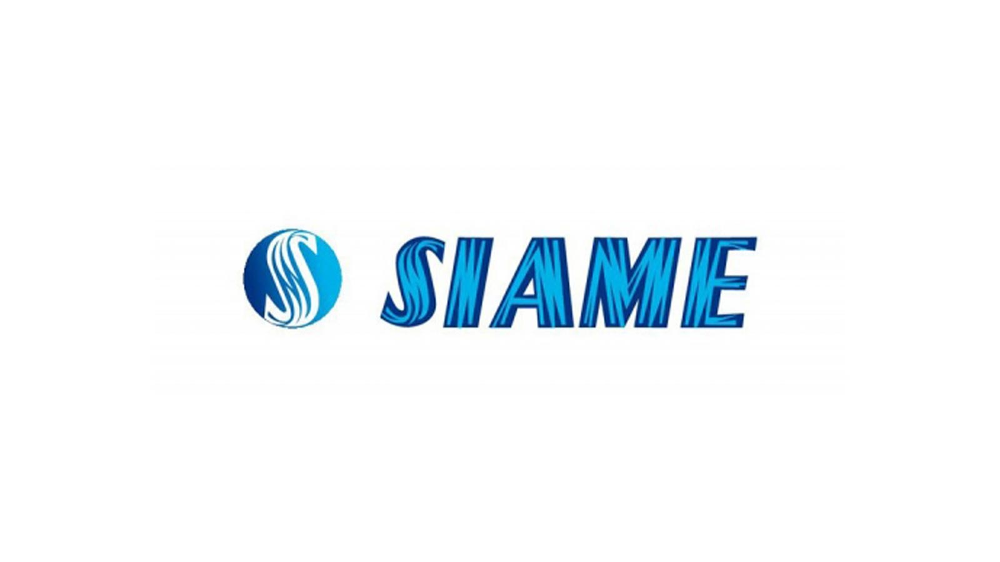

Mon premier stage (stage initiation) à la SIAME.
Puis mon stage technicienne, à TUNISIE CABLES grombalia
Enfin mon stage de fin d'études (PFE) chez TUNISIE CABLES.
Ces expériences m'ont permis de mettre en pratique les connaissances acquises lors de mes études.
|  |  |
| J'ai eu la chance de faire mon premier stage chez SIAME, Grâce à cette expérience, j'ai vraiment plongé dans le monde du travail et appris beaucoup sur la vie en entreprise. | Chez TUNISIE CABLES, où j'ai effectué mon deuxième stage de perfactionnement, Cette expérience m'a ouvert les yeux sur de nombreux aspects du monde professionnel, me permettant de développer mes compétences et de mieux comprendre le secteur |